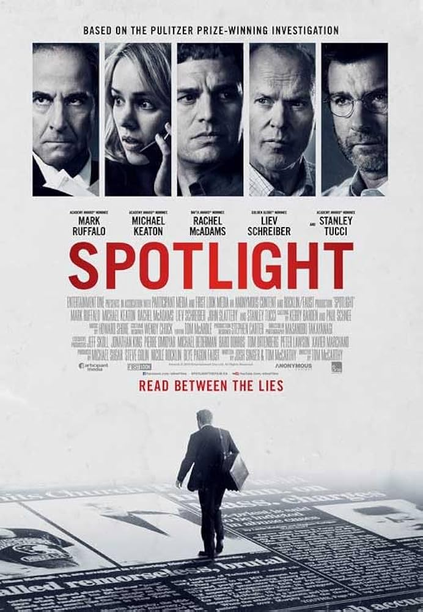

Back to Timeline
Spotlight (2015)
About the Film
Spotlight, based on a real story, follows the four reporters on The Boston Globe’s investigative reporting team, Spotlight, as they uncover a large network of child abuse by catholic preists that has been systemically covered up by the church. What started as a small story covering one case slowly builds up as the Spotlight team uncovers a decade-long cover up of abusive priests by the Church and how they allowed it to continue by transferring the priests to different locations.
Clip: An Emotional Toll
Clip: "It Takes an Outsider"
Historical Context
Spotlight was released in 2015, at a point in time in which American’s trust in institutions, including the press, had been in decline for some time. While the film still generally presents a positive vision of journalism, providing somewhat of a countering vision to the increasing feelings of distrust that many Americans had about the press, those attitudes of distrust seem to have influenced the film in what events it emphasizes and what messages it seems to impart. The film depicts many institutions as corrupted and not functioning as they should, including the press, to a small extent. The film opens with a scene of the police covering up a priest's sexual abuse of children, clearly showing an institution being complicit in the Catholic church’s coverup and perpetuation of abuse. But the film depicts more than just that: Mike Rezendes, one of the reporters, encounters trouble finding public documents detailing how important officials in the church were aware of the abuse happening. Those documents are literally removed from the courthouse, and even once they are refiled, a judge tries to discourage Mike Rezendes from taking the documents. The judicial system, too, is complicit. So are people who claim to be helping victims: Eric MacLeish, a lawyer who has dealt with many victims of abuse by priests, settles cases directly with the church, rather than settling those cases, which would be incredibly damaging to the church, in public through the judicial system. When Robby is talking to a fellow alumni who went to a catholic school, where abuse had also been covered up, school officials are also there, and try to convince him that the leadership hadn’t known about the abuse, even when it’s clear that they probably did. Even Walter Robinson, the journalist leading the investigative team, had been previously complicit in the coverup, as many years ago, he had gotten a list of 20 priests who had sexually abused kids, but didn’t investigate further and instead downplayed the story.
Notably, this discovery that the Globe had previously gotten this shocking information but didn’t investigate further didn’t happen until the making of the movie (Walter Robinson didn’t even remember doing that), but the filmmakers thought it was important to incorporate it into the film, even though that wasn’t when that happened in real life. That clearly shows that the filmmakers did want to show the audience that all these different institutions, including the press itself, had previously been complicit in covering up this abuse, reflecting Americans’ increasing distrust in institutions. As Tom McCarthy, the director of the film said about the events depicted in the movie, “This was evil on a grand scale... this was institutional level complicity and deference on a societal level... This isn't a condemnation of the Church as much as a condemnation of an institution. There are so many examples of that”
Additionally, the film at several points implies and even once explicitly says that you need an outsider to expose this institutional corruption: the investigation is started at the behest of the new editor of the Boston Globe, Marty Baron, who at times in the movie is looked down upon by other characters because he’s not from Boston, and the one lawyer who’s taking abuse cases public, Mitchell Garabedian, is an Armenian, unlike pretty much all the inhabitants of Boston. And this is also indicative of the American mood at the time, and indeed, even today: just look at how many people support, for example, political outsiders who aren’t part of the “establishment”, as trust in government and institutions continues to go down.
Clip: "This is Boston"
Journalistic Themes
- Impact of journalism on journalists: how Rezendes had wanted to go back to church at some point, but now can’t because of what they’ve uncovered, Matt Carroll finds “treatment center” near his house (which connects to other theme: release a story now, or get more information before doing so)
- Institutional complicity: a lot of different institutions are complicit in helping the catholic church cover up the abuse
- Righting the wrongs of the past: how clips of past Boston Globe articles were never followed up until now, how Eric Macliesh sent 20 guilty priests to the Globe but it was ignored, by Robby. But they’re telling the story now.
- Listening to survivors: Phil Saviano, leader of an organization of abuse survivors, was ignored by the globe 5 years prior to the Spotlight team’s investigation, and the editors were not eager to hear him out. This ties into the theme about needing outsiders - the Spotlight team only starts this investigation after Marty Baron, the new editor who isn’t from the area, tells them to
Related Film: All the President's Men
- Both movies show the heroic side of journalism, with Woodward and Bernstein trying to uncover the truth of Watergate, and the Spotlight crew trying to uncover the truth of the Catholic church.
- They are both taking down big government run systems.
- There is pressure to get the story out, but the right story, and with the right amount of sources, for instance, the editor of Spotlight doesn’t trust Phil Saviano (leader of the organization SNAP: Survivors Network of those Abused by Priests) as a source until the team has more information to back it up. A difference though, is that in All The President’s Men, Woodward and Bernstein publish several news stories about Watergate throughout the film, while in Spotlight we only see one story being published
- In All the President's Men, the editor is frustrated with all of Woodward and Bernstein’s sources not wanting to name names, making the newspaper seem less credible.
- In both films, there’s this frustration of knowing what’s true, wanting to tell the world, but not having all the information to strongly back everything up. For example, Robby meeting up with Jim, a lawyer for the church, to confirm names of abusive priests
- This is also evident in Rezendes’s breakdown scene once he gets the unsealed public documents, how they have to get this story out now, because if they don’t, it’ll just keep happening. - also connects with pressure to get story out sooner vs. more accurate
- Another thing both movies show is the personal effects the work of journalism has on people. When we look into Woodward’s apartment, everything is covered in the work of the newspaper, papers on papers. At one point, because the information they have on the government is so secretive, that they fear for their lives, they put on loud music and communicate through a typewriter to make sure they are heard. It’s dangerous work.
- Spotlight doesn’t necessarily show the dangers, but it shows the personal nature of the way journalism can strike you, depending on the story. Sasha Pfiefer stops going to church with her nana. And there’s this really poignant scene where Mike Rezendes goes to a Church around christmas time and just watches the kids sing silent night. But he can’t enjoy it, because of everything he knows about the church. Because of the thought that maybe one of those kids is being abused by a priest.
Contrasting Film: Nightcrawler
- This is really just a contrast between ethical versus unethical journalism.
- Interestingly, these are both listed in the category of thriller when you look them up.
- I think the big contrast with this movie is care. One could argue that Lou Bloom, the main character in Nightcrawler, does not care about the people he is documenting. He cares about the blood, about the violence, about the area where the violence is happening to make the news channel he’s selling his work to have good ratings, but he doesn’t actually care about the victims.
- There have been a lot of arguments about journalism, specifically photojournalism, about the ethics of the journalist. Why see suffering happen and not do anything? Why see a starving child and not give them food? Some might argue that taking that photo and getting that photo is helping, it’s bringing awareness to what is happening. But there are ways to bring awareness with care. And Lou Bloom is certainly not doing that.
- The journalists in Spotlight are very gentle with the victims of the Catholic church. In one scene where Sasha Pifefer is interviewing Joe, a victim, she uses very reassuring language with him to get the story out, and she tells him that it’s okay when he gets emotional.
- We don’t see this with Nightcrawler, in fact, we see him do quite the opposite. Even though most of his subjects are severely wounded or dead, Lou doesn’t show care to them, getting up close and filming them without their consent or even knowledge. We see the crux of his lack of empathy when his partner dies on the job, and instead of trying to get him help, he just starts filming his body. He is in this job for himself, not for anyone else.
- Whereas, the editor of Spotlight says that, this kind of story, the kind that uncovers the truth about the Catholic church, that lets victims stories be heard, “is why we do this.”